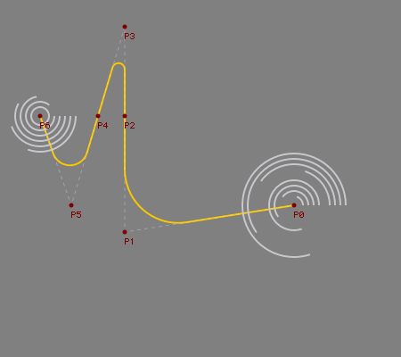

Hello all, here you find the code to draw arc primitives using NSBezierPath.
from AppKit import NSBezierPath # I got the NSBezierPath thing from: # http://developer.apple.com/documentation/Cocoa/Conceptual/CocoaDrawingGuide/Paths/chapter_6_section_5.html#//apple_ref/doc/uid/TP40003290-CH206-BBCBGFBH size(450, 400) background(0.5,0.5,0.53) font("Monaco", 9) x0,y0 = 330,230 # starting point x1,y1 = 140, 260 # corner point x2,y2 = 140, 130 radius1 = 60 # arc radius x3,y3 = 140, 30 x4,y4 = 110, 130 radius2 = 7 x5,y5 = 80, 230 x6,y6 = 45, 130 radius3 = 20 radius_cw = 0 # clockwise arc radius radius_ccw = 0 # counterclockwise arc radius def arc(self, x1, y1, x2, y2, radius): self._segment_cache = None self.inheritFromContext() self._nsBezierPath.appendBezierPathWithArcFromPoint_toPoint_radius_( (x1, y1), (x2, y2), radius) def arc_c(self, originx, originy, radius, startangle, endangle, clockwise=True): self._segment_cache = None self.inheritFromContext() if clockwise: # the clockwise direction is relative to the orientation of the axis, so it looks flipped compared to the normal Cartesial Plane self._nsBezierPath.appendBezierPathWithArcWithCenter_radius_startAngle_endAngle_clockwise_( (originx, originy), radius, startangle, endangle, 1) else: self._nsBezierPath.appendBezierPathWithArcWithCenter_radius_startAngle_endAngle_( (originx, originy), radius, startangle, endangle) # DRAW THE LINE WITH the function "arc": appendBezierPathWithArcFromPoint_toPoint_radius_() strokewidth(2) stroke(1, 0.8, 0) nofill() b = BezierPath() b.moveto(x0, y0) arc(b, x1, y1 , x2, y2, radius1) b.lineto(x2,y2) arc(b, x3, y3, x4, y4, radius2) b.lineto(x4, y4) arc(b, x5, y5, x6, y6, radius3) b.lineto(x6, y6) #print b.path b.draw() # DRAW the clockwise arcs with the function "arc_c": appendBezierPathWithArcWithCenter_radius_startAngle_endAngle_clockwise_() strokewidth(2.0) stroke(0.8, 0.8, 0.8) nofill() cw = BezierPath() for i in range(10): radius_cw = (i*6) + 4 cw.moveto(x0 + radius_cw, y0) arc_c( cw, x0, y0, radius_cw, 0, 360-(i*72), 1 ) cw.draw() # DRAW the counterclockwise arcs with the function "arc_c": appendBezierPathWithArcWithCenter_radius_startAngle_endAngle_() strokewidth(2.0) stroke(0.8, 0.8, 0.8) nofill() ccw = BezierPath() for i in range(6): radius_ccw = (i*6) + 10 ccw.moveto(x6 + radius_ccw,y6) arc_c( ccw, x6, y6, radius_ccw, 0, 360-(i*50), 0 ) ccw.draw() ################################################################# def linedash(path, segment=10, gap=4): # this is just to visualize the points path._nsBezierPath.setLineDash_count_phase_([segment, gap], 2, 50) return path def oval_c(x, y, d): # draws origin-centered circles r = d/2.0 oval(x-r, y-r, d, d) def pointlabel(x, y, t): oval_c(x, y, 5) text(t ,x ,y+14) # DRAW DOTTED LINE strokewidth(0.4) stroke(0.9) nofill() v = BezierPath() v.moveto(x0, y0) v.lineto(x1, y1) v.lineto(x2, y2) v.lineto(x3, y3) v.lineto(x4, y4) v.lineto(x5, y5) v.lineto(x6, y6) linedash(v, segment=4) drawpath(v) # DRAW THE POINTS/LABELS fill(0.5,0,0) nostroke() pointlabel(x0, y0, "P0") pointlabel(x1, y1, "P1") pointlabel(x2, y2, "P2") pointlabel(x3, y3, "P3") pointlabel(x4, y4, "P4") pointlabel(x5, y5, "P5") pointlabel(x6, y6, "P6")


ARC primitive example
Posted by Giorgio O. on Dec 05, 2007
Hello all,
here you find the code to draw arc primitives using NSBezierPath.